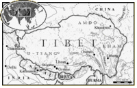

De: La Frikipedia, la enciclopedia extremadamente seria.
De: La Frikipedia, la enciclopedia extremadamente seria. De: La Frikipedia, la enciclopedia extremadamente seria.
| De la serie Países del planeta tierra: | |||||
| Tíbet | |||||
|---|---|---|---|---|---|
| |||||
| Lema: Nieve, picos altos, un clarísimo símbolo fálico... | |||||
| Himno: Nosotros decimos, viva Mao-Tsé-Tunning, porque sino, te pueden fusilar...
| |||||
| 
| |||||
| Capital | Lhasa | ||||
| Mayor ciudad | Potala | ||||
| Lenguas oficiales | Tibetano, Chino, Kazajistano, Indú, y como siempre: ¡¡¡Inglés!!! | ||||
| Gobierno | Comunismo | ||||
| Dalai-Lama, sustituido por cualquier chino | Mao-Tse-Tunning | ||||
| Área | Tan alto que causa el 95% de los accidentes aéreos | ||||
| Población | 0,01% de ingleses, 1,07% de tibetanos normales, 24% de chinos, y 74% de monjes calvos | ||||
| Moneda | Manteca de yak | ||||
| Zona horaria | Tan alto que se ha roto el espacio tiempo | ||||
| Dominio Internet | .elinternetnopuedellegartanalto (correo del Dalai-Lama) | ||||
| Código telefónico | 67898
| ||||
| La Unión Aldraísta Española lucha por liberarlo | |||||
El Tíbet es un divertido lugar, pero ya no es un país, fué conquistado por Mao-Tsé-Tunning. Su clima es muy frío, menos en el Potala, donde hay estufas.
El Tíbet es llamada la gran verruga del mundo, porque desde el espacio estropea la visión de este planeta. Los primeros humanos de allí llegaron cuando quisieron formar un país bastante frío para forrarse vendiendo muchos abrigos. Cuando en un reino que estaba entonces en Afganistán se conviertieron al budismo Tantra (Lamaísmo) pues a la gente de allí le dió por hacer lo mismo. Siguiendo el ejemplo del reino de Oddiyana, las leyes eran cada vez más buenas con los monjes, y hasta crearon sus propios equipos de deporte. Así los monjes se pasaron de rosca hasta de la invasión de Gengis Khan, que solucionó los problemas con la violencia, la mejor solución a todos los problemas. Los reyes mongoles crearon el Potala y colocaron al primer Dalai Lama. Cuando los mongoles se fueron, el Tíbet siguió siendo independiente, hasta que llegaron los comunistas. Pero ahora el XIV Dalai Lama, Lobsang Rampa y la Unión Aldraísta Española luchan por liberarlo.
Actualmente, el gobierno aspañol, negoció con el Tíbet la inclusión del primer Lama aspañol, siendo el actual gobernante Manolo Lama.
Los tibetanos son famosos, sobre todo, porque fueron los que descubrieron los Chakras, que son lugares de la Columna Vertebral, el más bajo se encuentra entre el agujero de culo y el aparato genital. Según cuentan, el alma se encuentra por el cuerpo, pero para saber más mejor te lees un libro de Lobsang Rampa en vez de ver tanto Naruto.
Por supuesto el mejor lugar que visitar es el Potala. Se sabe que allí hay muchos leopardos de las nieves, pero como le hagas algo a uno es que te matan y te mueres para toda la vida. También están las catedrales, con candelabros de oro y molinillos de oración, además de que en el suelo de algunas hay surcos provocados por miles de años de gente pasando por allí. Sino te gusta el rollo religioso, también puedes visitar el mercado de Lhasa, llamado como el país Andorra 2. Si te gusta Humor Amarillo, te divertirás viendo a los acróbatas que se hacen chichones como un huevo. Puedes visitar las cuevas secretas, que incluso tienen dentro lagos inexplorados, o algunos monasterios donde los monjes viven con las monjas y eso es un cachondeo constante. También puedes ir al Valle Secreto, pero mejor lo hago otro día y pido permiso a M.F.P.
Un animal típico de allí es el pony, antes el que no sabía montar era un pringado porque estaban prohibidos los vehículos con ruedas, como hoy en día están los coches, nadie los necesita, menos los feriantes, porque los ponis les encantan a los chinos. A los burros es obligatorio dejarles días de descanso. Como los budistas no matan animales, tienen muchos gatos para que hagan el trabajo sucio. Otra criatura es el leopardo de las nieves, leopardo de color blanco que come cabras montesas. Pero sobre todo, ni se te ocurra meter la mano dentro de la boca de los cacho mastines que tienen por allí.
Antes, tenían un ejército de hombres desarrollados bajo una estricta militaridad militarmente militar en la ciudad de Kham que expulsaron al británico Yagsband, pero ahora está el ejército colocado por los chinos.Imagen:Yak4.gif|thumb|Toda la comida del Tíbet se hace con algo de este animal.
Allí, antes de los comunistas, a los mendigos era obligatorio darles de comer, pero Mao-Tsé-Tunnig acabó con esa maravillosa costumbre.
Allí, como no se podía excavar en la piedra, les daban los muertos a los buitres, pero hoy está fastidiado por culpa de las máquinas taladradoras que funcionan a base de caca de caballo. A los niños los meten en el agua fría para ver si podrán aguantar el frío. Si no, es mejor que mueran de bebés.
Allí ser un niño pijo es algo horrible, porque creo, por lo que me contó un mendigo borracho, que allí cuanto más rico eres, más dura es la educación. Como la madera viene de otros sitios, las clases de esculturas se dan con queso de yak, duro como un pan de 20 años. También te enseñan el tiro con arco (pero está prohibido disparar a los animales), andar con zancos, lanzar cometas y a utilizar los mojones de yak como combustibles. También te enseñan a adivinar el futuro con bolas (o bolsas) de cristal.
Estas leyes ya no son obligatorias, pero si las cumples, te podrás ligar a casi cualquier tibetana.
Además de la costumbre de llevar incienso a todas partes, los tibetanos que han sido echados de su país, suelen irse a vivir a la orilla del mar, quizá porque no soportan que hayan más montañas aparte de las suyas. ¿Me lo puede explicar el Dalai Lama? Si no eres un monje calvo, muchos chicos tienen la costumbre de peinarse con coletas. Pero si eres un chalado que quiere ser monje, para lo difícil que es mejor ve a trabajar a Humor Amarillo. Por cierto, te avisamos que allí suenan las trompetas de los templos a Medianoche, así que si no te gusta te vas a Marruecos o Pakistán a escuchar a los almuecines. Tampoco se usan allí sillas, se usan cijines o cojones. También tienen la sana costumbre de cojer a algunos niños que estudian de monjes y, si ellos quieren, les hacen un agujero en el cráneo para poder utilizar el tercer ojo, y eso es una glándula que proviene de nuestros antepasados reptiles y que hoy en día sólo suelen tener los tuataras.
Los tibetanos son de la religión del budismo lamaísta o tántrico (hay muchos chalados enfermos de la mente que se creen que eso tiene que ver con el kamasutra, pero no es así). Ellos creen que el resto de los budistas son un poco tristes, pues mira, es una forma personal de mirar algo tan marajatónido como la religión. Son casi la única religión que acepta la existencia de extraterrestres, no como la Iglesia Católica, que intenta matar a J.J.Benítez. También creen en la astrología, cosa que condenan los demás budistas, y también Rapel porque no quiere tener competencia. Pero ellos no tienen fe en el teléfono, no pueden creerse que eso sirva para hablar, cosa que los de Oransh (Orange) no comprenden. También creen en muchas maneras de relajación, la más famosa, para que un niño se relaje y sea bueno en los estudios, es hacer que se caiga de la cuna muchas veces posibles. Tienen mucho respeto por los gatos, cosa que parecen haber olvidado los egipcios. Lo malo que tienen, es que maltratan a los carniceros por la tontería de ser vegetarianos y que permiten el aborto. También suelen ir a recoger plantas curativas y alucinógenas. Los lamas más delicados montan en mulas o mulos, porque son asexuados, lo cual es tontería. Allí el levitar es tan normal como aquí ir en ascensor o descensor.
El gobierno de este país era así antes de la invasión de los comunistas:
Digamos de paso que si allí no existe ministro de trabajo es porque, a diferencia del resto del mundo, a los tibetanos no les gusta trabajar.
Estas son las relaciones que han tenido los tibetanos con el mundo exterior.
Autor(es):